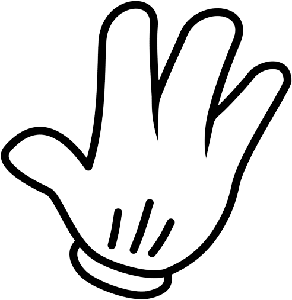

Rock

Paper

Scissors
Playing rock-paper-scissors is easy and fun! Whether you're playing with a computer or with friends, the game follows the same rules:
- Rock beats scissors.
- Scissors beat paper.
- Paper beats rock.
To play the game with a computer, follow these steps:
- Open the rock-paper-scissors game by clicking on ‘Play with Computer’.
- Choose your hand gesture by clicking the corresponding button or icon. Remember, rock beats scissors, scissors beat paper, and paper beats rock.
- Wait for the computer to choose its hand gesture.
- Determine the winner of the round based on the rules above.
- Play additional rounds until one player wins a predetermined number of rounds (Win, Tie, Lose are recorded).
To play the game with friends, follow these steps:
- Click on the ‘Play with Friends’ button to connect with to friend.
- Who goes first will be decided automatically.
- Determine the winner of the round based on the rules above.
- Play additional rounds until one player wins a predetermined number of rounds (Win, Tie, Lose are recorded).
Rock-paper-scissors is a game of chance, but it can also involve strategy and mind games. With practice, you can become a skilled rock-paper-scissors player and enjoy the game even more.